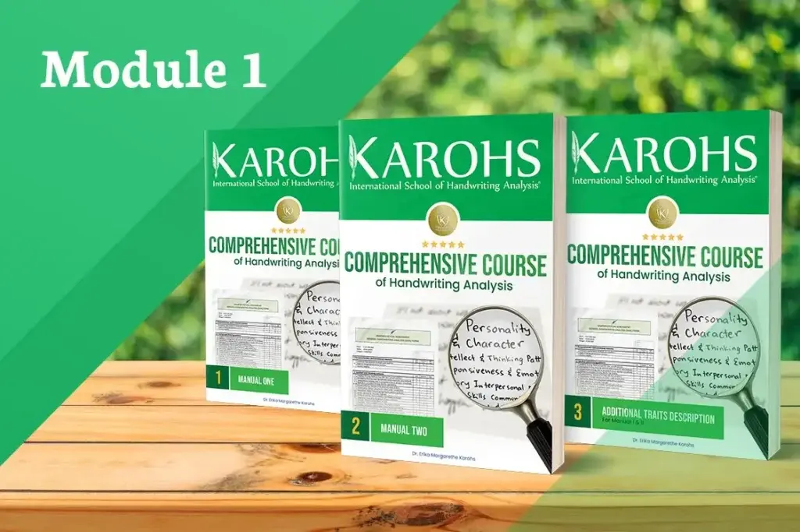

Modul 1
Mempelajari 100+ Traits dalam 10 Aspek Kepribadian
Modul pertama adalah fondasi dari seluruh kursus. Anda akan mempelajari lebih dari 100 traits grafologi yang dikelompokkan ke dalam 10 aspek kepribadian utama.
- Emosi terlihat lewat slant & tekanan tulisan.
- Proses Berpikir analitis, komprehensif.
- Rasa Percaya Diri percaya diri atau ragu.
- Dorongan & Motivasi
- Produktivitas
- Relasi Sosial
- Komunikasi
- Bakat Tambahan
- Hambatan: Ketakutan
- Pertahanan Diri
- Manual I
- Manual II
- Buku Deskripsi Traits
- Kamus 130+ Traits
- Flash Card 112 Kartu
Setelah modul ini Anda mampu membaca lebih dari 100 indikator kepribadian sebagai fondasi menjadi seorang Certified Handwriting Analyst.